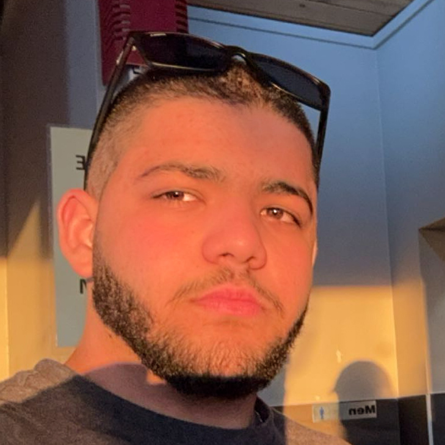
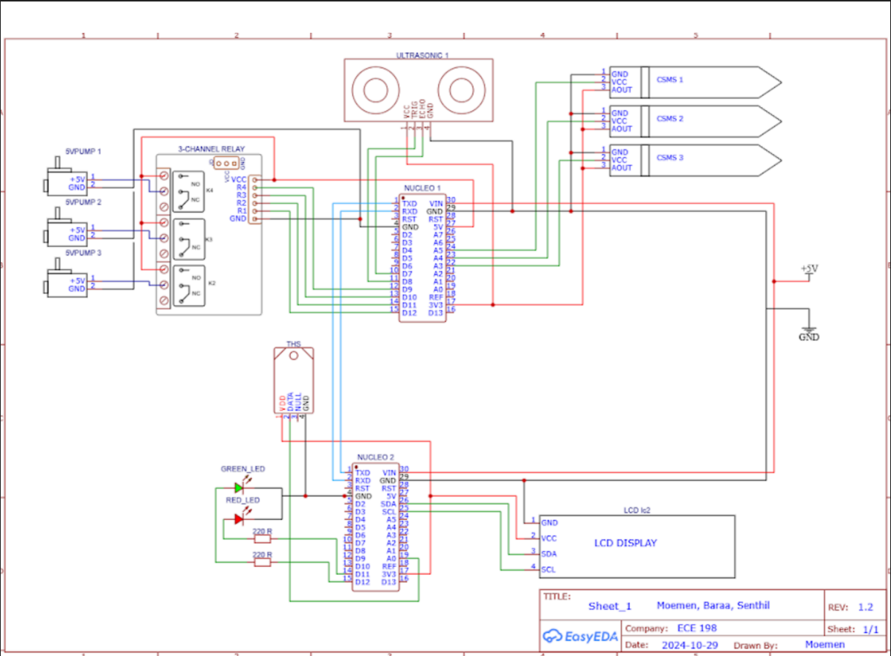
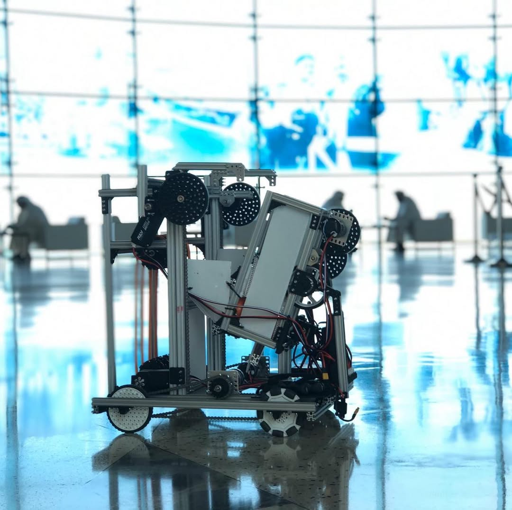

Raspberry Pi · Python
Athan Pi ↗
A Raspberry Pi Zero 2 W running Python on Linux plays the athan and reminders at scheduled times.
I build projects where hardware meets software, from embedded systems to robotics.
Explore projects ↓ Résumé ↗
A Raspberry Pi Zero 2 W running Python on Linux plays the athan and reminders at scheduled times.

An STM32 microcontroller automates plant watering.

I represented Kuwait at the 2019 FIRST Global Challenge, Ocean Opportunities, in Dubai.
BASc in Computer Engineering
Coursework includes electricity and magnetism, discrete mathematics and logic, digital circuits and systems, linear circuits, and calculus.
University website ↗
Suspension Subteam Member
I design and fabricate suspension components for the team’s electric race car, working from engineering drawings and machining parts to specified tolerances.


Outside engineering, I explore the outdoors and photograph architecture, wildlife and motorsports.